O Louco O início da jornada, potencial ilimitado e novas posibilidades.
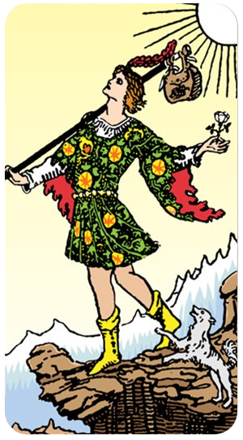
O Louco é uma das cartas mais fascinantes e enigmáticas do Tarot. Representando o Arcano Maior de número zero (ou às vezes vinte e dois, dependendo do baralho), essa carta simboliza novos começos, liberdade e potencial ilimitado.
Significados Gerais do Louco
Novo Começo: O Louco frequentemente aparece no início de uma nova jornada, indicando um passo corajoso em direção ao desconhecido. Ele é o arquétipo do aventureiro que deixa para trás o que é familiar em busca de novas experiências.
Liberdade e Espontaneidade: Ele representa a liberdade e a espontaneidade, incitando a seguir o coração e confiar no fluxo da vida, mesmo sem saber exatamente o que está por vir.
Inocência e Confiança: Com a sua atitude despreocupada, o Louco nos lembra da importância de confiar no universo e manter uma mente aberta. Sua inocência e otimismo são suas maiores forças.
Riscos e Impulso: Esta carta também avisa sobre a necessidade de equilíbrio. Embora a coragem seja valiosa, é importante considerar os riscos e evitar ações imprudentes.
Simbolismo da Carta
Caminhada: O Louco é frequentemente retratado caminhando com uma pequena trouxa, simbolizando a leveza e a ausência de preocupações materiais.
Cachorro: Um cachorro geralmente o acompanha, representando lealdade e proteção, mas também o chamado da razão tentando moderar sua impulsividade.
Penhasco: Às vezes, ele é mostrado perto de um penhasco, simbolizando os perigos que podem surgir quando se segue um caminho sem planejamento.
Interpretação em Leitura
No Amor: Indica novas aventuras românticas ou a necessidade de trazer mais liberdade e espontaneidade ao relacionamento.
Na Carreira: Sinaliza um novo projeto, mudança de carreira ou a coragem de seguir sua verdadeira paixão.
Na Vida Pessoal: Sugere um período de crescimento pessoal, exploração e autodescoberta.
O Louco é um lembrete poderoso de que a vida é uma jornada cheia de surpresas e oportunidades. Abraçar a incerteza e confiar no processo é a chave para descobrir novos horizontes.
O Mago Simbolizando o poder de transformar ideias em realidade através da ação consciente e criatividade
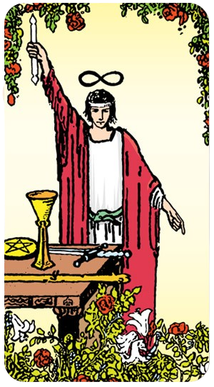
O Mago é uma figura icônica no Tarot, sendo o primeiro dos Arcanos Maiores e carregando o número I (um). Esta carta é rica em simbolismo e frequentemente associada ao poder da manifestação, ação e habilidade.
Significados Gerais do Mago
Manifestação e Realização: O Mago representa a capacidade de transformar ideias em realidade. Ele é o mestre da manifestação, usando suas habilidades e recursos para criar o que deseja.
Confiança e Habilidade: Ele simboliza confiança, destreza e a habilidade de manipular elementos para atingir objetivos. O Mago nos lembra do poder que temos dentro de nós para influenciar nosso destino.
Início de um Novo Ciclo: Muitas vezes, ele aparece no início de um novo projeto ou fase da vida, incentivando a usar as habilidades e talentos próprios para avançar.
Conexão entre o Céu e a Terra: O Mago atua como um canal entre o mundo espiritual e o material, simbolizando a integração e o equilíbrio entre ambos.
Simbolismo da Carta
Mesa de Trabalho: O Mago é frequentemente retratado com uma mesa diante dele, sobre a qual estão os quatro símbolos dos naipes do Tarot (cálice, espada, pentáculo e bastão). Isso representa o domínio sobre os quatro elementos e a totalidade dos recursos disponíveis.
Postura: A clássica postura do Mago, com uma mão apontando para o céu e a outra para a terra, simboliza a frase "assim na terra como no céu", indicando sua capacidade de canalizar a energia divina para o mundo material.
Lemniscata (∞): O símbolo do infinito geralmente aparece acima de sua cabeça ou em sua cintura, representando o infinito poder e potencial.
Interpretação em Leitura
No Amor: Indica uma fase de intensa conexão e o potencial para manifestar um relacionamento desejado. Sugere usar habilidades de comunicação e confiança para fortalecer laços.
Na Carreira: Sinaliza novas oportunidades e a capacidade de usar talentos pessoais para alcançar objetivos. É um bom presságio para quem inicia um novo negócio ou projeto.
Na Vida Pessoal: Representa autoconfiança, domínio de habilidades pessoais e a capacidade de tomar controle sobre sua própria vida. Incentiva a ação e a iniciativa.
O Mago é uma carta de poder, potencial e realização. Ele nos lembra de que temos as ferramentas e o poder para criar a realidade que desejamos, desde que tenhamos a confiança e a habilidade para usá-las.
A Sacerdotisa Representa intuição, sabedoria interior e mistérios ocultos.

A Sacerdotisa, também conhecida como A Papisa em alguns baralhos, é a carta número II dos Arcanos Maiores. Esta carta é rica em simbolismo e está profundamente associada à intuição, mistério e sabedoria oculta.
Significados Gerais da Sacerdotisa
Intuição e Sabedoria: A Sacerdotisa é um arquétipo de sabedoria interior. Ela nos encoraja a confiar na nossa intuição e a buscar respostas dentro de nós mesmos.
Mistério e Segredos: Representa o desconhecido e o oculto. Ela guarda segredos e nos lembra da importância de paciência e introspecção para revelar o que está escondido.
Equilíbrio Espiritual: Simboliza o equilíbrio entre o consciente e o inconsciente, a mente racional e o instinto. A Sacerdotisa nos guia para entender nossos sonhos e nossas emoções mais profundas.
Passividade e Reflexão: Ao contrário do Mago, que é ativo e manifesta, a Sacerdotisa é passiva e receptiva. Ela nos aconselha a refletir e esperar pelo momento certo para agir.
Simbolismo da Carta
Rolo de Pergaminho ou Livro: A Sacerdotisa é frequentemente retratada segurando um rolo de pergaminho ou um livro, simbolizando o conhecimento esotérico e a sabedoria que não é facilmente acessível.
Pilares: Em muitas representações, ela está sentada entre dois pilares, simbolizando dualidade e equilíbrio (geralmente identificados como Boaz e Jachin, os pilares do Templo de Salomão).
Lua: A lua está frequentemente presente na imagem, simbolizando o inconsciente, os ciclos naturais e a intuição feminina.
Cortina: Atrás da Sacerdotisa, uma cortina frequentemente esconde o que está por trás dela, representando os segredos do universo e o conhecimento oculto.
Interpretação em Leitura
No Amor: Pode indicar um relacionamento onde a intuição e a compreensão emocional são essenciais. Também pode sugerir mistérios ou segredos que precisam ser revelados.
Na Carreira: Sugere uma fase de planejamento e introspecção, onde a paciência é crucial. Pode indicar a necessidade de confiar em seus instintos na tomada de decisões.
Na Vida Pessoal: Representa um chamado para a introspecção e a autoexploração. Incentiva a meditação e a busca de respostas dentro de si mesmo.
A Sacerdotisa é uma guia poderosa para aqueles que buscam entender as profundezas de seu próprio ser e os mistérios do universo. Ela nos lembra que algumas respostas não podem ser encontradas no mundo exterior, mas apenas dentro de nós mesmos.
A Imperatriz Símbolo de abundância, fertilidade, cuidado e criatividade.
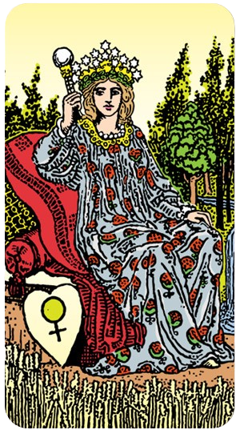
A Imperatriz é a terceira carta dos Arcanos Maiores, marcada pelo número III. Ela representa a abundância, a fertilidade, o cuidado e a energia maternal. Esta carta está profundamente conectada ao poder da natureza, à criação e ao sustento.
Significados Gerais da Imperatriz
Abundância e Prosperidade: A Imperatriz simboliza riqueza e abundância, não só no sentido material, mas também emocional e espiritual. Ela representa a prosperidade que vem de uma conexão profunda com a natureza e o cuidado.
Fertilidade e Criação: Esta carta é um ícone de fertilidade e crescimento. Pode indicar gravidez, novos projetos ou a criação de algo novo e significativo.
Cuidado e Nutrição: Ela representa o arquétipo da mãe, proporcionando cuidado, proteção e amor incondicional. A Imperatriz nos lembra da importância do amor e do apoio nos relacionamentos e no desenvolvimento pessoal.
Conexão com a Natureza: A Imperatriz está intimamente ligada à Terra e aos ciclos naturais, sugerindo uma vida em harmonia com o ambiente e a valorização das belezas e recursos naturais.
Simbolismo da Carta
Natureza e Vegetação: A Imperatriz é frequentemente retratada em um cenário natural exuberante, cercada por árvores, flores e água corrente, simbolizando a vitalidade e a fertilidade da natureza.
Coroa de Estrelas: Ela geralmente usa uma coroa adornada com estrelas, representando sua conexão com o reino divino e a inspiração celestial.
Escudo com o Símbolo de Vênus: O escudo que muitas vezes aparece ao seu lado ostenta o símbolo de Vênus, associando-a ao amor, beleza e feminilidade.
Trono: Ela é retratada sentada em um trono, refletindo seu status de realeza e autoridade, bem como o conforto e a segurança que ela proporciona.
Interpretação em Leitura
No Amor: A Imperatriz sugere relacionamentos nutritivos e amorosos. Pode indicar crescimento no amor, apoio mútuo e a importância do cuidado dentro da relação.
Na Carreira: Indica prosperidade e sucesso nos empreendimentos. Pode sugerir que é um bom momento para iniciar novos projetos ou aproveitar as oportunidades para crescimento e criatividade.
Na Vida Pessoal: Representa um período de crescimento pessoal, autoaceitação e bem-estar. Incentiva a cuidar de si mesmo e dos outros, bem como a apreciar a beleza ao seu redor.
A Imperatriz é uma carta de celebração da vida, crescimento e abundância. Ela nos lembra da importância do cuidado, da conexão com a natureza e da criação em nossas vidas.
O imperador Simboliza a autoridade, a estrutura e o poder.
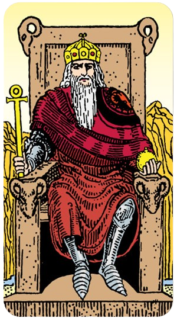
O Imperador é uma figura de poder e autoridade no Tarot, representando a quarta carta dos Arcanos Maiores, marcada pelo número IV. Ele simboliza a estabilidade, a estrutura e a liderança.
Significados Gerais do Imperador
Autoridade e Poder: O Imperador representa a figura de liderança e comando, simbolizando força e estabilidade. Ele é visto como alguém que tem controle e autoridade sobre sua vida e sobre os outros.
Estrutura e Organização: Esta carta enfatiza a importância de regras, ordem e estruturas sólidas. Ela nos lembra que disciplina e organização são essenciais para alcançar nossos objetivos.
Proteção e Responsabilidade: O Imperador é um protetor e cuidador, oferecendo segurança e suporte às pessoas sob sua guarda. Ele assume a responsabilidade por aqueles ao seu redor.
Disciplina e Controle: Esta carta sugere a necessidade de autodisciplina e controle sobre suas ações e decisões. O Imperador nos encoraja a tomar decisões firmes e a manter o controle das situações.
Simbolismo da Carta
Trono e Cetro: O Imperador é frequentemente retratado sentado em um trono, segurando um cetro, simbolizando sua autoridade e poder.
Barba Branca: A barba branca que muitas vezes aparece na imagem do Imperador representa sabedoria e experiência acumuladas ao longo do tempo.
Armadura: A armadura que ele usa simboliza proteção e disposição para defender o que é importante.
Montanhas no Fundo: As montanhas ao fundo representam estabilidade, permanência e a firmeza das decisões do Imperador.
Interpretação em Leitura
No Amor: O Imperador indica estabilidade e segurança no relacionamento. Pode sugerir a presença de uma figura de autoridade ou a necessidade de regras claras e estrutura na relação.
Na Carreira: Sinaliza liderança e sucesso em posições de poder. É um bom presságio para quem está assumindo responsabilidades ou buscando uma posição de comando.
Na Vida Pessoal: Representa a necessidade de autodisciplina, estrutura e controle. Incentiva a tomar decisões firmes e a buscar estabilidade.
O Imperador é um símbolo poderoso de liderança e organização. Ele nos lembra da importância da ordem, da autoridade e do poder na construção de uma vida estável e bem-sucedida.
O Papa Esta carta é repleta de significados relacionados à tradição, à espiritualidade e à transmissão de sabedoria.
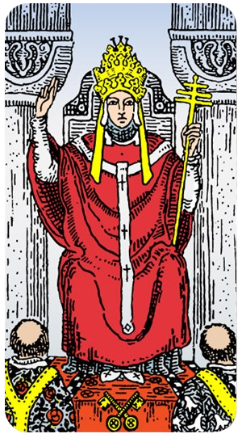
O Papa, também conhecido como O Hierofante, é a quinta carta dos Arcanos Maiores no Tarot, marcada pelo número V. Ele representa a tradição, a espiritualidade e a sabedoria transmitida por meio de ensino e orientação.
Significados Gerais do Papa
Tradição e Conformidade: O Papa é um guardião da tradição e da ordem estabelecida. Ele simboliza a conformidade com normas e práticas tradicionais, bem como o respeito por costumes e rituais.
Espiritualidade e Religião: Esta carta é um arquétipo de autoridade espiritual e religiosa. Ela destaca a importância da fé, dos ensinamentos religiosos e das práticas espirituais.
Sabedoria e Ensino: O Papa representa o papel do mentor e do professor. Ele guia os outros, oferecendo sabedoria e conselhos baseados no conhecimento espiritual e moral.
Instituições e Autoridade Moral: Ele também está associado a instituições, como a igreja ou outras organizações, que transmitem valores e regras morais.
Simbolismo da Carta
Trono e Símbolos Religiosos: O Papa é frequentemente retratado sentado em um trono, rodeado por símbolos religiosos como a cruz ou a chave, representando sua autoridade espiritual.
Tiara de Três Camadas: A tiara que ele usa, com três camadas, simboliza a conexão com o divino e a autoridade sobre o corpo, mente e espírito.
Dois Acolitos: Muitas vezes, há duas figuras ajoelhadas diante dele, representando a transmissão de conhecimento e a aceitação da sabedoria espiritual.
Pilares: Similar à Sacerdotisa, ele é frequentemente mostrado entre dois pilares, simbolizando equilíbrio e dualidade.
Interpretação em Leitura
No Amor: O Papa indica a importância de valores tradicionais e compromissos no relacionamento. Pode sugerir a necessidade de um conselho ou orientação moral.
Na Carreira: Sinaliza o papel de mentor ou a busca por orientação em sua vida profissional. É um bom presságio para quem trabalha em instituições ou profissões que envolvem ensino e aconselhamento.
Na Vida Pessoal: Representa a busca por conhecimento espiritual e a conformidade com valores morais. Incentiva a seguir uma prática espiritual ou a buscar orientação de um mentor.
O Papa é um símbolo de sabedoria, ensino e tradição. Ele nos lembra da importância de valores espirituais e morais em nossas vidas e da busca por orientação e conhecimento.
Os Enamorados esta carta simboliza basicamente alguma decisão que precisa ser tomada.
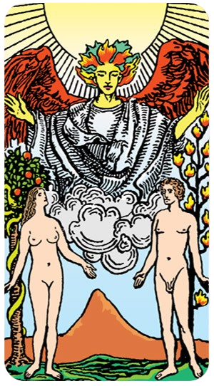
Os Enamorados é a sexta carta dos Arcanos Maiores no Tarot, representada pelo número VI. Esta carta está profundamente associada ao amor, à união e às escolhas significativas na vida.
Significados Gerais dos Enamorados
Amor e Relacionamentos: Esta carta é o arquétipo do amor e da união. Representa conexões profundas e significativas, tanto românticas quanto platônicas.
Escolhas e Decisões: Os Enamorados também simbolizam decisões importantes que precisam ser feitas, especialmente aquelas que envolvem dilemas emocionais ou morais.
Equilíbrio e Harmonia: A carta sugere a busca pelo equilíbrio e pela harmonia nas relações e nas escolhas que fazemos.
União Espiritual: Além do amor físico, Os Enamorados destacam a união espiritual e a conexão profunda entre almas.
Simbolismo da Carta
Casal: Os Enamorados são frequentemente representados por um casal, simbolizando a união e o amor. Em muitas ilustrações, eles estão sob a bênção de um anjo, indicando uma conexão divina.
Árvore do Conhecimento e Árvore da Vida: Em algumas representações, há duas árvores atrás do casal, a Árvore do Conhecimento (com uma serpente) e a Árvore da Vida, simbolizando o equilíbrio entre o conhecimento e a vida eterna.
Anjo: Um anjo geralmente está acima do casal, representando proteção divina e a presença de forças espirituais orientando a união.
Montanhas: Ao fundo, montanhas simbolizam os desafios que os amantes podem enfrentar e a solidez das suas escolhas.
Interpretação em Leitura
No Amor: Os Enamorados indicam uma relação significativa e amorosa. Pode sugerir o fortalecimento de um vínculo existente ou a chegada de um novo amor.
Na Carreira: Pode representar parcerias ou colaborações importantes. Também pode sugerir a necessidade de tomar decisões que alinhem melhor o trabalho com os valores pessoais.
Na Vida Pessoal: Indica a importância de escolhas significativas e a busca pelo equilíbrio. Incentiva a tomar decisões que estejam alinhadas com o coração e a intuição.
Os Enamorados nos lembram da importância do amor, da união e das escolhas que fazemos em nossas vidas. Eles representam a harmonia entre o coração e a mente e a importância de seguir o caminho que ressoa com nossa verdade interior.
O Carro representa a vitória, o controle, a direção, o esforço, a confiança e o caminho.
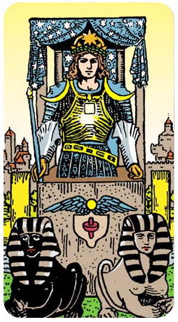
O Carro é a sétima carta dos Arcanos Maiores no Tarot, marcada pelo número VII. Esta carta representa a vitória, a direção e o controle, simbolizando o triunfo através da determinação e da força de vontade.
Significados Gerais do Carro
Vitória e Sucesso: O Carro é um símbolo de conquista e sucesso. Ele sugere que, com esforço e foco, podemos superar obstáculos e alcançar nossos objetivos.
Determinação e Força de Vontade: A carta destaca a importância da determinação, disciplina e controle para avançar na vida. É um lembrete de que a força de vontade é crucial para dirigir nossos destinos.
Movimento e Jornada: Representa movimento e progresso, tanto físico quanto espiritual. Pode indicar uma viagem ou a necessidade de tomar uma direção específica na vida.
Autocontrole e Equilíbrio: O Carro também sugere a necessidade de equilibrar diferentes forças e impulsos internos para avançar de forma eficaz.
Simbolismo da Carta
Carruagem: A imagem do Carro mostra um guerreiro em uma carruagem, simbolizando a direção e o comando. Ele está conduzindo sua vida e seu destino.
Esfinges ou Cavalos: Em muitas representações, o Carro é puxado por esfinges ou cavalos de cores diferentes, simbolizando forças opostas (como luz e escuridão) que precisam ser controladas e harmonizadas.
Armadura e Coroa: O guerreiro está geralmente vestindo armadura e uma coroa, simbolizando proteção, autoridade e triunfo.
Cidade ao Fundo: A cidade ao fundo representa o ambiente de onde ele vem e para onde ele pode estar voltando, indicando o movimento entre diferentes estágios da vida.
Interpretação em Leitura
No Amor: O Carro pode indicar progresso e movimento em um relacionamento. Sugere superar desafios juntos e avançar em direção a um objetivo comum.
Na Carreira: Representa sucesso e avanço na carreira. Indica que a determinação e o foco resultarão em conquistas e reconhecimento.
Na Vida Pessoal: Sugere a necessidade de tomar controle de sua vida e direção. Incentiva a avançar com confiança e a manter o equilíbrio entre diferentes aspectos da vida.
O Carro é um símbolo poderoso de vitória e progresso. Ele nos lembra da importância de determinação, foco e controle na conquista de nossos objetivos e na superação de desafios.
A Força sugere proteção dos nossos objetivos, indicando mais foco e autocontrole em torno da situação.
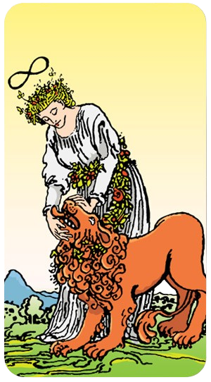
A Força é a oitava carta dos Arcanos Maiores no Tarot, representada pelo número VIII. Esta carta simboliza a coragem, a força interior e a capacidade de superar desafios através da calma e da perseverança.
Significados Gerais da Força
Coragem e Determinação: A Força representa a coragem para enfrentar os desafios da vida com determinação e firmeza. Ela nos lembra que a verdadeira força vem de dentro.
Calma e Compaixão: Em vez de força bruta, esta carta sugere a importância da calma, paciência e compaixão para dominar situações difíceis e controlar impulsos.
Autocontrole: A Força destaca o autocontrole e a capacidade de manter a serenidade diante da adversidade. Ela sugere que a resiliência emocional é mais poderosa do que a força física.
Superação de Obstáculos: Indica a capacidade de superar obstáculos através da persistência e da força de vontade.
Simbolismo da Carta
Mulher e Leão: A imagem clássica mostra uma mulher domando um leão, simbolizando a combinação da suavidade com a força bruta. A mulher representa a calma e o controle, enquanto o leão representa os impulsos e paixões selvagens.
Coroa de Flores: A coroa de flores na cabeça da mulher e o cinto de flores em volta do leão simbolizam a harmonia e a pureza.
Lemniscata (∞): O símbolo do infinito, frequentemente visto acima da cabeça da mulher, representa o poder infinito e a sabedoria eterna.
Interpretação em Leitura
No Amor: A Força pode indicar um relacionamento forte e resiliente, onde a paciência e a compaixão são essenciais. Sugere a superação de desafios no relacionamento através do amor e da compreensão.
Na Carreira: Representa a capacidade de enfrentar desafios no trabalho com determinação e autocontrole. Sugere que o sucesso virá através da perseverança e da abordagem calma.
Na Vida Pessoal: Indica a importância de manter a calma e o autocontrole em situações difíceis. Encoraja a confiar na própria força interior para superar obstáculos e alcançar metas.
A Força é uma carta poderosa que nos lembra que a verdadeira coragem e força vêm de dentro. Ela nos incentiva a enfrentar desafios com calma, paciência e compaixão, confiando na nossa resiliência emocional.
O Eremita simboliza a busca interior, a introspecção e o conhecimento, mas também fala de recolhimento interior, concentração no essencial e maturidade através da experiência.
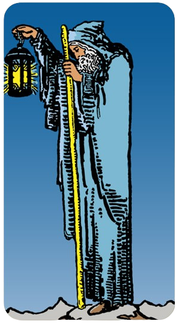
O Eremita é a nona carta dos Arcanos Maiores no Tarot, representada pelo número IX. Esta carta simboliza introspecção, sabedoria interior e a busca por conhecimento espiritual.
Significados Gerais do Eremita
Introspecção e Solitude: O Eremita representa a necessidade de afastar-se do caos e das distrações da vida cotidiana para buscar respostas dentro de si. Ele enfatiza a importância da solitude para a reflexão e o crescimento espiritual.
Sabedoria Interior: Esta carta destaca a sabedoria que vem com a experiência e a introspecção. O Eremita é o arquétipo do mentor e do guia espiritual que busca a verdade interior.
Busca por Conhecimento: Representa uma jornada de autoconhecimento e esclarecimento. Ele sugere que as respostas estão dentro de nós e que devemos buscar profundamente para encontrá-las.
Paciência e Prudência: Encoraja a abordagem paciente e cuidadosa para as situações da vida, aconselhando a tomar decisões refletidas e ponderadas.
Simbolismo da Carta
Lampião: O Eremita é frequentemente retratado segurando um lampião que ilumina seu caminho, simbolizando a busca pela verdade e o conhecimento interior que ilumina a escuridão.
Bastão: Ele também segura um bastão, representando apoio, sabedoria e a jornada espiritual.
Roupas Simples: Suas roupas simples simbolizam a renúncia aos luxos mundanos e a concentração no crescimento espiritual.
Montanha: O Eremita muitas vezes está em um cenário de montanha, representando a elevação e a busca por compreensão superior e perspectiva.
Interpretação em Leitura
No Amor: O Eremita pode indicar um período de introspecção e reflexão dentro do relacionamento. Sugere a importância de compreender a si mesmo para construir um vínculo mais forte.
Na Carreira: Representa a busca por propósito e direção na vida profissional. Pode indicar a necessidade de retirar-se temporariamente para reavaliar objetivos e estratégias.
Na Vida Pessoal: Encoraja a introspecção e a busca por sabedoria interior. Sugere que as respostas para os dilemas pessoais estão dentro de nós e que é necessário um tempo para refletir e meditar.
O Eremita é uma carta poderosa que nos lembra da importância da introspecção e da sabedoria interior. Ele nos incentiva a buscar a verdade dentro de nós mesmos e a encontrar clareza através da solitude e da reflexão.
A roda da fortuna nos lembra que tudo está em constante movimento, e os altos e baixos são inevitáveis e sugere que mudanças fortuitas e eventos imprevisíveis estão prestes a acontecer.
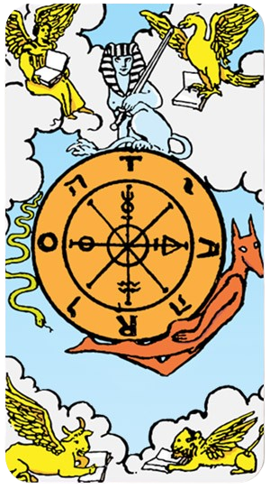
A Roda da Fortuna é a décima carta dos Arcanos Maiores no Tarot, marcada pelo número X. Esta carta representa ciclos, mudanças e o destino, simbolizando a natureza cíclica da vida e os altos e baixos que todos enfrentamos.
Significados Gerais da Roda da fortuna
Ciclos e Mudanças: A Roda da Fortuna simboliza os ciclos inevitáveis da vida. Ela nos lembra que a mudança é constante e que precisamos estar preparados para os altos e baixos.
Destino e Sorte: Esta carta destaca a influência do destino e da sorte em nossas vidas. Pode indicar um momento em que forças além do nosso controle estão em jogo.
Oportunidade e Transformação: A Roda da Fortuna também sugere que as mudanças trazem novas oportunidades e possibilidades de transformação. É um lembrete para aproveitar as oportunidades quando elas surgirem.
Aceitação e Resiliência: Encoraja a aceitação dos ciclos naturais da vida e a resiliência para enfrentar os desafios e aproveitar os momentos de sorte.
Simbolismo da Carta
Roda: A roda em si representa o ciclo contínuo da vida, com suas subidas e descidas.
Criaturas ao Redor da Roda: Em muitas representações, há figuras ou criaturas ao redor da roda, como o Anubis, a Esfinge e a Serpente, simbolizando diferentes forças e influências.
Quatro Elementos: As quatro figuras nos cantos da carta (geralmente um anjo, uma águia, um touro e um leão) representam os quatro elementos (ar, água, terra e fogo) e os signos fixos do zodíaco (Aquário, Escorpião, Touro e Leão), indicando a harmonia e o equilíbrio.
TARO / ROTA: Algumas representações incluem as letras T, A, R e O na roda, que podem formar palavras como "TARO" ou "ROTA", sugerindo a interconexão e o movimento contínuo.
Interpretação em Leitura
No Amor: A Roda da Fortuna pode indicar mudanças inesperadas no relacionamento. Pode ser um momento de transição que trará novos desafios ou oportunidades.
Na Carreira: Sugere mudanças no ambiente de trabalho ou novas oportunidades de crescimento. Indica que a sorte pode jogar a seu favor ou contra, dependendo do ciclo atual.
Na Vida Pessoal: Representa um período de transformação e mudança. Encoraja a aceitar os altos e baixos da vida e a estar preparado para novas fases.
A Roda da Fortuna nos lembra que a vida é um ciclo de constante mudança. Ela nos incentiva a aceitar e adaptar-nos às transformações, aproveitar as oportunidades e ser resilientes diante dos desafios.
A Justiça representa o equilíbrio, a integridade, a força moral e a estabilidade.
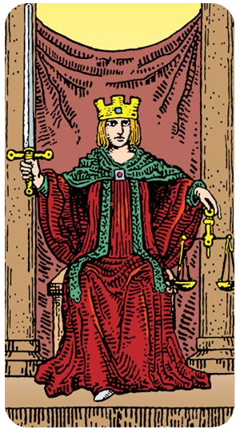
A Justiça é a décima primeira carta dos Arcanos Maiores no Tarot, representada pelo número XI. Esta carta simboliza equilíbrio, verdade e justiça, destacando a importância da moralidade e da imparcialidade.
Significados Gerais da Justiça
Equilíbrio e Harmonia: A Justiça representa a busca por equilíbrio e harmonia nas ações e nas decisões. Ela nos lembra da importância de manter a equidade em todas as áreas da vida.
Verdade e Integridade: Esta carta enfatiza a importância da verdade e da honestidade. A Justiça nos incentiva a agir com integridade e a falar a verdade em todas as situações.
Imparcialidade e Decisão: A Justiça simboliza a necessidade de tomar decisões imparciais e justas. Ela nos lembra de avaliar todas as opções e considerar todas as consequências antes de agir.
Karma e Consequências: Representa a lei do karma e a ideia de que nossas ações têm consequências. Encoraja a responsabilidade por nossas escolhas e a aceitação das repercussões.
Simbolismo da Carta
Balança: A Justiça é frequentemente retratada segurando uma balança, simbolizando o equilíbrio e a equidade. A balança representa a necessidade de pesar todas as opções e tomar decisões justas.
Espada: Ela também segura uma espada, que simboliza a verdade e a capacidade de cortar através das ilusões e enganos. A espada representa a clareza e a determinação.
Olhos Abertos ou Vendados: Em algumas representações, a Justiça é mostrada com os olhos vendados para simbolizar a imparcialidade. Em outras, seus olhos estão abertos, indicando a necessidade de ver a verdade e a realidade com clareza.
Trono e Colunas: Sentada em um trono entre duas colunas, a Justiça representa a estabilidade e a estrutura necessárias para manter a ordem e a justiça.
Interpretação em Leitura
No Amor: A Justiça sugere a importância de honestidade e equilíbrio no relacionamento. Pode indicar a necessidade de resolver conflitos de maneira justa e imparcial.
Na Carreira: Representa a necessidade de agir com integridade e de tomar decisões justas no ambiente de trabalho. Pode indicar o envolvimento em questões legais ou a necessidade de avaliar contratos e acordos com cuidado.
Na Vida Pessoal: Encoraja a busca por equilíbrio e harmonia em todas as áreas da vida. Sugere a importância de ser honesto consigo mesmo e de assumir a responsabilidade por suas ações.
A Justiça é uma carta poderosa que nos lembra da importância da verdade, da integridade e do equilíbrio. Ela nos incentiva a agir de maneira justa e a considerar todas as consequências de nossas escolhas.
O Enforcado/ O Pendurado momento de para e analisar a situação de outros angulos.
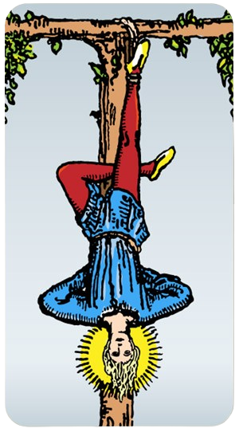
O Enforcado/Pendurado é a décima segunda carta dos Arcanos Maiores no Tarot, representada pelo número XII. Esta carta simboliza sacrifício, novos pontos de vista e aceitação.
Significados Gerais do Enforcado/Pendurado
Sacrifício e Rendição: O Enforcado/Pendurado frequentemente sugere a necessidade de deixar algo para trás ou fazer um sacrifício em prol de um bem maior. Ele ensina a importância da rendição e da aceitação das circunstâncias.
Nova Perspectiva: Esta carta é um convite para ver as coisas de uma nova maneira. Ao inverter-se, o Enforcado/Pendurado representa a mudança de perspectiva e a importância de olhar as situações por um ângulo diferente.
Parada e Reflexão: Indica um período de pausa e introspecção. Pode sugerir que é um momento para refletir, analisar e esperar antes de tomar ações.
Transformação e Crescimento: Embora possa parecer uma carta desafiadora, o Enforcado/Pendorado também indica que, através da aceitação e do sacrifício, podemos crescer e transformar-nos.
Simbolismo da Carta
Figura Invertida: A imagem do Enforcado/Pendurado mostra uma figura pendurada de cabeça para baixo, muitas vezes com um halo em volta da cabeça, simbolizando iluminação e sabedoria obtidas através da suspensão e rendição.
Corda e Árvore: O Enforcado/Pendurado está preso por um pé, pendurado em uma árvore. A árvore representa o eixo do mundo e a conexão entre o céu e a terra. A corda simboliza a suspensão temporária e o sacrifício.
Halo: O halo ao redor da cabeça do Enforcado/Pendurado simboliza a iluminação espiritual e o insight que vêm da introspecção e do sacrifício.
Expressão Tranquila: Apesar da posição desafiadora, a expressão do Enforcado/Pendurado é geralmente calma e serena, indicando aceitação e paz com a situação.
Interpretação em Leitura
No Amor: O Enforcado/Pendurado pode sugerir a necessidade de ver o relacionamento de um novo ponto de vista. Pode indicar um período de pausa ou reflexão para compreender melhor a dinâmica da relação.
Na Carreira: Representa a necessidade de uma nova abordagem ou perspectiva no trabalho. Pode sugerir que é hora de considerar opções alternativas ou fazer sacrifícios para atingir objetivos maiores.
Na Vida Pessoal: Encoraja a introspecção e a aceitação das circunstâncias. Indica que a aceitação e a rendição podem levar a novos insights e crescimento pessoal.
O Enforcado/Pendurado é uma carta que nos lembra da importância de ver as coisas de maneira diferente e de aceitar as circunstâncias com serenidade. Ele nos ensina que, através do sacrifício e da rendição, podemos alcançar novos níveis de compreensão e crescimento.
A Morte sinaliza que uma fase importante em sua vida está terminando e outra vai começar.
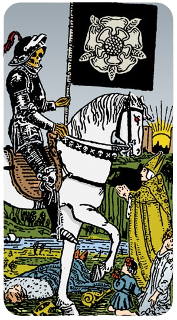
A Morte é a décima terceira carta dos Arcanos Maiores no Tarot, marcada pelo número XIII. Embora o nome e a imagem possam ser intimidadoras, esta carta é, na verdade, um símbolo poderoso de transformação, renascimento e novos começos.
Significados Gerais da Morte
Transformação e Mudança: A Morte simboliza o fim de um ciclo e o início de outro. Representa a necessidade de deixar para trás o velho para dar espaço ao novo. É uma carta de transformação profunda.
Renovação e Renascimento: Sugere que, através da mudança, vem o renascimento. A Morte indica que algo novo está prestes a surgir, trazendo nova energia e oportunidades.
Liberação: Esta carta também sugere a necessidade de liberar o que não serve mais, seja um hábito, uma crença ou uma situação. É um convite para se desapegar do que está estagnado.
Inevitabilidade: A Morte representa as mudanças inevitáveis da vida e a aceitação da impermanência. Encoraja a encarar essas mudanças com coragem e abertura.
Simbolismo da Carta
Esqueleto e Armadura: A imagem clássica da Morte mostra um esqueleto em uma armadura, simbolizando a inevitabilidade e a natureza imparcial da morte como transformação.
Cavalo Branco: O esqueleto costuma estar montado em um cavalo branco, que simboliza pureza e o novo começo que surge após a transformação.
Cenário de Transição: A carta muitas vezes inclui um sol nascente no fundo, simbolizando a luz após a escuridão e a renovação que segue a mudança.
Pessoas de Diversas Classes: Em algumas representações, há figuras de diversas classes sociais ao redor, indicando que a transformação é universal e afeta a todos.
Interpretação em Leitura
No Amor: A Morte pode indicar o fim de um relacionamento, mas também sugere que esse fim é necessário para que algo novo e melhor possa surgir. Pode representar uma transformação significativa na dinâmica de um relacionamento existente.
Na Carreira: Representa mudanças importantes no ambiente de trabalho, como o fim de um emprego ou o início de uma nova carreira. Indica que essas mudanças trarão novas oportunidades.
Na Vida Pessoal: Sugere a necessidade de transformação pessoal. Encoraja a deixar para trás hábitos, crenças ou situações que não servem mais, para abrir caminho para o crescimento pessoal.
A Morte é uma carta poderosa e transformadora que nos lembra que a mudança é uma parte natural da vida. Ela nos incentiva a aceitar o fim dos ciclos e a abraçar os novos começos com coragem e esperança.
A Temperança significa ter moderação, equilíbrio e parcimônia em suas atitudes.
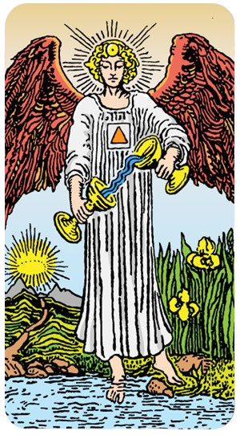
A Temperança é a décima quarta carta dos Arcanos Maiores no Tarot, representada pelo número XIV. Esta carta simboliza equilíbrio, moderação e harmonia, destacando a importância da paciência e da integração de opostos.
Significados Gerais da Temperança
Equilíbrio e Moderação: A Temperança representa a necessidade de manter o equilíbrio em todas as áreas da vida. Ela nos lembra da importância da moderação e do autocontrole.
Harmonia e Integração: Esta carta enfatiza a união e a integração de diferentes aspectos da vida, sugerindo que a harmonia é alcançada através da combinação de elementos opostos.
Paciência e Reflexão: A Temperança encoraja a paciência e a reflexão cuidadosa antes de agir. Ela sugere que devemos buscar a serenidade e a calma em nossas decisões.
Cura e Transformação: Indica processos de cura e crescimento espiritual. A Temperança sugere que a transformação ocorre através da paz interior e da harmonização das energias.
Simbolismo da Carta
Anjo: A imagem clássica da Temperança mostra um anjo, simbolizando a presença de forças divinas e a conexão espiritual. O anjo representa equilíbrio e serenidade.
Duas Taças: O anjo costuma estar vertendo líquido de uma taça para outra, simbolizando a integração e o fluxo harmonioso entre diferentes elementos.
Pé na Terra e na Água: Um pé do anjo está na terra e o outro na água, representando o equilíbrio entre o mundo material e espiritual.
Triângulo no Peito: O triângulo no peito do anjo é um símbolo de harmonia e união entre corpo, mente e espírito.
Caminho para o Sol: No fundo, um caminho leva ao sol nascente, simbolizando a iluminação e o esclarecimento que vêm com a harmonia e o equilíbrio.
Interpretação em Leitura
No Amor: A Temperança sugere a necessidade de equilíbrio e harmonia no relacionamento. Pode indicar que a paciência e a comunicação são essenciais para resolver conflitos e fortalecer o vínculo.
Na Carreira: Representa a necessidade de equilíbrio entre trabalho e vida pessoal. Sugere que a moderação e o planejamento cuidadoso levarão ao sucesso.
Na Vida Pessoal: Encoraja a busca por equilíbrio interior e harmonia. Sugere a importância de integrar diferentes aspectos da vida para alcançar paz e crescimento espiritual.
A Temperança é uma carta que nos lembra da importância do equilíbrio e da harmonia em nossas vidas. Ela nos incentiva a ser pacientes, moderados e a buscar a integração de todos os aspectos de nossa existência.
O Diabo pode representar a tentação, a dependência ou a manipulação, e pode ser um momento para confrontar as sombras.
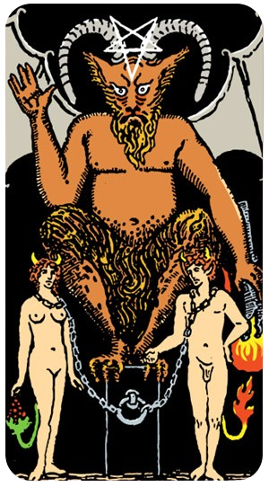
O Diabo é a décima quinta carta dos Arcanos Maiores no Tarot, representada pelo número XV. Esta carta é muitas vezes mal compreendida, mas ela simboliza aspectos da vida relacionados a tentação, materialismo e exploração das sombras.
Significados Gerais do Diabo
Materialismo e Prazeres Terrenos: O Diabo representa o apego aos prazeres materiais e às indulgências. Ele nos alerta sobre a obsessão com bens materiais e gratificações imediatas.
Tentação e Dependência: Esta carta pode indicar situações de tentação e comportamento compulsivo, sugerindo que podemos estar presos por hábitos ou relacionamentos prejudiciais.
Exploração das Sombras: O Diabo nos encoraja a confrontar e entender nossos aspectos mais sombrios. Reconhecer e integrar essas partes é crucial para o crescimento pessoal.
Ilusão e Manipulação: Também simboliza a ilusão e a manipulação, tanto de nós mesmos quanto dos outros. Ele nos lembra de questionar nossas motivações e as influências externas.
Simbolismo da Carta
Figura do Diabo: A imagem clássica mostra uma figura demoníaca com asas de morcego, chifres e uma aparência assustadora, representando a tentação e os aspectos mais sombrios da natureza humana.
Correntes e Escravidão: Há figuras humanas acorrentadas ao Diabo, simbolizando a sensação de estar preso ou dominado por desejos e comportamentos negativos.
Tochas e Fogo: O fogo ao redor do Diabo representa a paixão intensa e os desejos que podem queimar fora de controle.
Inversão da Luz: Muitas vezes, o Diabo é retratado em um cenário sombrio, simbolizando a ausência de luz e clareza espiritual.
Interpretação em Leitura
No Amor: O Diabo pode indicar relacionamentos baseados na dependência e no controle, ou trazer à tona questões de ciúme e possessividade. Ele sugere a necessidade de reavaliar tais dinâmicas.
Na Carreira: Representa a tentação de agir de maneira antiética ou de se deixar dominar pelo desejo de poder e dinheiro. Encoraja a manter a integridade e a ética.
Na Vida Pessoal: Sugere a necessidade de confrontar hábitos e padrões de comportamento autodestrutivos. Encoraja a libertação das correntes que nos prendem e a busca por clareza e verdade interior.
O Diabo é uma carta poderosa que nos lembra da importância de confrontar nossas sombras e de nos libertar das ilusões e dependências. Ele nos desafia a buscar a verdade e a integridade, mesmo quando enfrentamos tentações e desafios.
A Torre representa mudanças bruscas, o fim do comodismo e a necessidade de se adaptar a novas experiências.
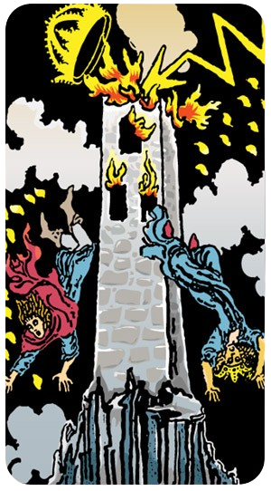
A Torre é a décima sexta carta dos Arcanos Maiores no Tarot, marcada pelo número XVI. Esta carta é um símbolo poderoso de destruição, revelação e mudança bruta.
Significados Gerais da Torre
Destruição e Mudança: A Torre representa a destruição de estruturas antigas e a necessidade de mudança abrupta. Esta carta sugere que uma transformação significativa está ocorrendo ou prestes a ocorrer.
Revelação e Despertar: Muitas vezes, a destruição representada pela Torre leva a uma revelação importante ou a um despertar. Ela nos força a ver a verdade e a enfrentar realidades que podem ter sido escondidas ou ignoradas.
Libertação: Embora pareça uma carta negativa à primeira vista, A Torre pode simbolizar a libertação de velhas crenças, hábitos ou situações que não servem mais. É um convite para reconstruir com uma base mais sólida e verdadeira.
Crise e Crescimento: A carta pode indicar uma crise, mas também sugere que essa crise leva ao crescimento e à renovação. Através da destruição vem a oportunidade de renascimento.
Simbolismo da Carta
Torre em Chamas: A imagem clássica da Torre mostra uma estrutura sendo atingida por um raio, pegando fogo e desmoronando. Isso simboliza a súbita e violenta destruição de algo que parecia seguro e estável.
Figuras Caindo: Pessoas são frequentemente mostradas caindo da Torre, representando a queda das ilusões e a perda de segurança.
Raio: O raio que atinge a Torre simboliza a intervenção divina ou o despertar súbito que causa a destruição.
Coroa: A queda de uma coroa da Torre sugere a perda de poder ou status.
Interpretação em Leitura
No Amor: A Torre pode indicar um rompimento ou uma crise significativa no relacionamento. Pode também sugerir a revelação de verdades ocultas que levam a uma mudança drástica na dinâmica da relação.
Na Carreira: Representa mudanças abruptas no ambiente de trabalho, como uma demissão ou uma reestruturação. Embora inicialmente difícil, essas mudanças podem abrir caminho para novas oportunidades.
Na Vida Pessoal: Sugere a necessidade de abandonar velhas crenças ou padrões que não servem mais. Encoraja a enfrentar a verdade e aceitar a mudança como um caminho para o crescimento pessoal.
A Torre é uma carta poderosa e transformadora que nos lembra da importância da mudança e da revelação. Ela nos desafia a aceitar a destruição como uma oportunidade de reconstruir algo mais sólido e verdadeiro.
A Estrela significa esperança, ajuda inesperada, perspicácia e claridade de visão, inspiração, flexibilidade.
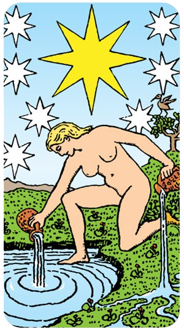
A Estrela é a décima sétima carta dos Arcanos Maiores no Tarot, representada pelo número XVII. Esta carta é um símbolo de esperança, inspiração e renovação, trazendo uma energia de calma e serenidade.
Significados Gerais da Estrela
Esperança e Otimismo: A Estrela representa uma luz no fim do túnel, trazendo esperança e renovação. Ela nos lembra de manter a fé em tempos difíceis e de que coisas boas estão por vir.
Inspiração e Criatividade: Esta carta sugere um influxo de inspiração e criatividade. A Estrela nos encoraja a explorar novas ideias e a confiar em nossas capacidades criativas.
Calma e Serenidade: A Estrela traz uma sensação de paz e tranquilidade. Ela representa a cura e a restauração emocional, ajudando-nos a encontrar equilíbrio e harmonia interior.
Espiritualidade e Propósito: Indica uma conexão profunda com o espiritual e a busca por um propósito maior. A Estrela nos guia a seguir nossa intuição e a buscar a verdade interior.
Simbolismo da Carta
Figura Despejando Água: A imagem clássica mostra uma figura nua despejando água de dois jarros. Um jarro verte água para a terra, simbolizando a nutrição do mundo material, enquanto o outro jarro verte água para um corpo d'água, representando a conexão com o mundo emocional e espiritual.
Estrela Brilhante: Acima da figura, uma grande estrela brilhante é rodeada por sete estrelas menores, simbolizando a inspiração divina e a conexão com o cosmos.
Natureza e Paisagem: O cenário natural ao redor da figura simboliza fertilidade, crescimento e renovação, refletindo a harmonia entre a terra e os céus.
Nudez: A nudez da figura representa vulnerabilidade e autenticidade, sugerindo que a verdadeira força vem de ser fiel a si mesmo.
Interpretação em Leitura
No Amor: A Estrela indica um período de cura e renovação em um relacionamento. Pode sugerir uma nova fase de esperança e otimismo, trazendo paz e harmonia à relação.
Na Carreira: Representa inspiração e criatividade no ambiente de trabalho. Sugere que novas ideias e projetos trarão sucesso e realização.
Na Vida Pessoal: Encoraja a busca por equilíbrio interior e serenidade. Indica que a esperança e a fé serão recompensadas com renovação e crescimento espiritual.
A Estrela é uma carta positiva e inspiradora que nos lembra de manter a esperança e a confiança em tempos difíceis. Ela nos guia em direção à cura, à criatividade e à conexão espiritual, trazendo uma sensação de paz e renovação.
A Lua simboliza incertezas, ilusões e a necessidade de confiar em nossa intuição.
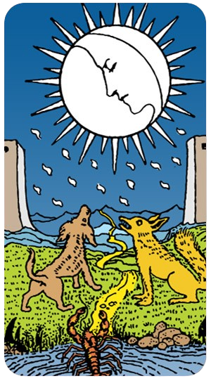
A Lua é a décima oitava carta dos Arcanos Maiores no Tarot, representada pelo número XVIII. Esta carta é um símbolo de intuição, mistério e ilusões, trazendo uma energia de introspecção e descoberta.
Significados Gerais da Lua
Intuição e Subconsciente: A Lua representa a profundidade do subconsciente e a intuição. Ela sugere que devemos confiar em nossos sentimentos e instintos para guiar-nos através de situações confusas ou enganosas.
Mistério e Ilusões: Esta carta simboliza o mistério e as ilusões, indicando que nem tudo é o que parece. A Lua pode revelar verdades ocultas ou enganos que precisam ser desvendados.
Sonhos e Imaginações: A Lua está associada aos sonhos e à imaginação, destacando a importância de prestar atenção aos nossos sonhos e às mensagens subconscientes que eles podem conter.
Medos e Ansiedades: Também pode representar medos e ansiedades que surgem do desconhecido. A Lua nos encoraja a confrontar e compreender esses sentimentos ocultos.
Simbolismo da Carta
Lua: A imagem clássica mostra uma lua cheia ou crescente, simbolizando o ciclo lunar e a natureza cambiante das emoções e intuições.
Lobisomem e Cão: Muitas vezes, há um cão e um lobo uivando para a lua, representando a dualidade entre o aspecto domesticado e o selvagem da natureza humana.
Caminho e Torre: Um caminho sinuoso entre duas torres representa a jornada da vida e os desafios que encontramos ao longo do caminho. As torres podem simbolizar a proteção e o limite entre o consciente e o inconsciente.
Lago e Caranguejo: Um lago com um caranguejo ou lagostim emergindo simboliza o subconsciente e as emoções ocultas que vêm à superfície.
Interpretação em Leitura
No Amor: A Lua pode indicar confusão ou engano em um relacionamento. Sugere a necessidade de confiar na intuição e de explorar sentimentos ocultos. Pode também apontar para a importância de enfrentar medos e ansiedades dentro da relação.
Na Carreira: Representa a necessidade de navegar por situações incertas ou enganosas no trabalho. Encoraja a confiar na intuição para tomar decisões e a estar ciente de possíveis ilusões ou mal-entendidos.
Na Vida Pessoal: Encoraja a introspecção e a exploração do subconsciente. Indica a importância de prestar atenção aos sonhos e às mensagens intuitivas. Sugere a necessidade de confrontar e compreender medos ocultos.
A Lua é uma carta poderosa que nos lembra da importância de confiar na intuição e de explorar os mistérios do subconsciente. Ela nos encoraja a enfrentar medos e ilusões, buscando a verdade oculta e a iluminação interior.
O Sol geralmente indica um momento extremamente positivo, pois a carta é uma das mais alegres e otimistas do Tarot.
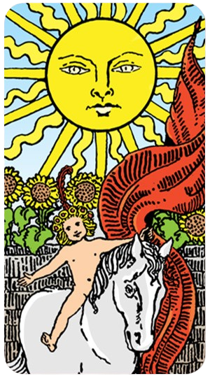
O Sol é a décima nona carta dos Arcanos Maiores no Tarot, representada pelo número XIX. Esta carta é um símbolo de alegria, sucesso e clareza, trazendo uma energia de positividade e realização.
Significados Gerais do Sol
Alegria e Felicidade: O Sol representa um estado de felicidade e contentamento. Ele sugere que momentos de alegria e celebração estão a caminho.
Sucesso e Realização: Esta carta indica sucesso em empreendimentos e a realização de objetivos. É um símbolo de vitórias e conquistas.
Clareza e Iluminação: O Sol traz clareza mental e iluminação, ajudando a dissipar dúvidas e incertezas. Ele sugere que a verdade será revelada e a compreensão será alcançada.
Vitalidade e Energia: Representa uma renovação de energia e vitalidade, trazendo uma sensação de bem-estar e entusiasmo.
Simbolismo da Carta
Sol Brilhante: A imagem clássica mostra um sol brilhante que ilumina tudo ao seu redor, simbolizando a luz da verdade, a clareza e o sucesso.
Criança Montada em um Cavalo: Muitas representações mostram uma criança feliz montada em um cavalo branco, simbolizando a pureza, a inocência e a alegria. O cavalo branco representa a força, a vitalidade e a liberdade.
Girassóis: Os girassóis que frequentemente aparecem na carta simbolizam o crescimento, a vitalidade e a busca pela luz e pelo conhecimento.
Muralha: Às vezes há uma muralha ao fundo, sugerindo a superação de obstáculos e a conquista de um novo patamar de felicidade e sucesso.
Interpretação em Leitura
No Amor: O Sol indica um período de felicidade e harmonia no relacionamento. Sugere momentos de alegria, celebração e uma conexão profunda.
Na Carreira: Representa sucesso e reconhecimento no trabalho. Sugere que os esforços serão recompensados e que novas oportunidades surgirão.
Na Vida Pessoal: Encoraja a aproveitar a vida ao máximo, celebrar as vitórias e manter uma atitude positiva. Indica uma fase de clareza e bem-estar.
O Sol é uma carta extremamente positiva que nos lembra da importância de alegria, sucesso e clareza em nossas vidas. Ela nos encoraja a celebrar nossos triunfos e a manter uma perspectiva otimista.
O Julgamento é a carta da renovação e do despertar espiritual, marcando um período de reflexão profunda e decisões que mudam a vida.
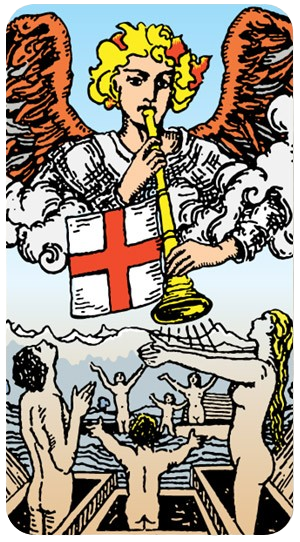
O Julgamento é a vigésima carta dos Arcanos Maiores no Tarot, representada pelo número XX. Esta carta é um símbolo de renovação, julgamento e reavaliação, trazendo uma energia de despertar e transformação.
Significados Gerais do Julgamento
Renovação e Despertar: O Julgamento representa um momento de despertar e renovação. Ele sugere que é hora de avaliar nossa vida e fazer mudanças significativas.
Avaliação e Reflexão: Esta carta convida à introspecção e à avaliação das ações passadas. É um chamado para refletir sobre nossas escolhas e aprender com nossas experiências.
Recompensa e Consequências: Indica que nossas ações terão consequências, sejam elas recompensas ou lições. O Julgamento nos lembra que devemos estar preparados para colher o que semeamos.
Transformação e Ressurreição: Simboliza a transformação e a possibilidade de recomeço. É uma carta de renascimento, sugerindo que podemos emergir mais fortes e sábios após um período de reflexão.
Simbolismo da Carta
Anjos e Trombetas: A imagem clássica do Julgamento mostra anjos tocando trombetas, simbolizando o chamado divino para despertar e renovar. As trombetas anunciam um novo começo.
Figuras Ressurgindo: Pessoas emergindo de túmulos representam o renascimento e a ressurreição. Elas simbolizam a nova vida que surge após a transformação.
Cruz Vermelha: Em algumas representações, há uma bandeira com uma cruz vermelha, simbolizando a redenção e a proteção divina.
Luz e Céu Aberto: O céu aberto e a luz brilhante simbolizam a revelação e a clareza que vêm com o despertar espiritual.
Interpretação em Leitura
No Amor: O Julgamento pode indicar um momento de reavaliação no relacionamento. Pode sugerir que é hora de perdoar e renovar, ou de tomar decisões importantes sobre o futuro da relação.
Na Carreira: Representa a avaliação de sua trajetória profissional e a possibilidade de mudanças significativas. Sugere que é um bom momento para fazer um balanço e considerar novos caminhos.
Na Vida Pessoal: Encoraja a introspecção e a reavaliação das escolhas e ações passadas. Indica que, ao aprender com o passado, podemos transformar nossa vida e seguir em frente com clareza e propósito.
O Julgamento é uma carta poderosa que nos lembra da importância da reflexão, da renovação e do despertar. Ela nos convida a avaliar nossas vidas, fazer mudanças significativas e abraçar a transformação com coragem e esperança.
O Mundo simboliza o desfecho bem-sucedido de alguma situação que tenha exigido muitos esforços.
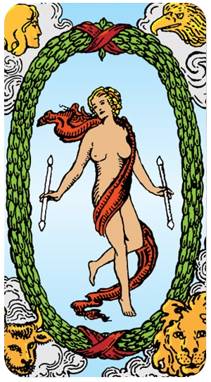
O Mundo é a vigésima primeira carta dos Arcanos Maiores no Tarot, representada pelo número XXI. Esta carta é um símbolo de conclusão, realização e integração, trazendo uma energia de completude e totalidade.
Significados Gerais do Mundo
Conclusão e Realização: O Mundo representa a conclusão de um ciclo ou jornada. Ele sugere que você alcançou seus objetivos e está colhendo os frutos de seu esforço.
Integração e Harmonia: Esta carta indica a integração completa dos diferentes aspectos da sua vida. Ela simboliza a harmonia e o equilíbrio entre o físico, o emocional, o mental e o espiritual.
Expansão e Novos Começos: Apesar de simbolizar o fim de um ciclo, O Mundo também sugere que você está pronto para novos começos e oportunidades. A conclusão de uma fase abre caminho para a próxima.
Realização Espiritual: Representa a totalidade e a realização espiritual. É um sinal de que você está em sintonia com o universo e em paz com seu lugar nele.
Simbolismo da Carta
Figura Dançando: A imagem clássica do Mundo mostra uma figura dançando ou em movimento, envolta em um círculo ou guirlanda. Isso simboliza a completude e a celebração da vida.
Guirlanda: A guirlanda de louros ou flores ao redor da figura representa a vitória, a conquista e a eternidade.
Quatro Figuras: Nos cantos da carta, as figuras de um anjo, uma águia, um touro e um leão representam os quatro elementos (ar, água, terra e fogo) e os quatro evangelistas, simbolizando a harmonia entre todas as forças do universo.
Bastões: Muitas vezes, a figura central está segurando bastões ou varas, simbolizando equilíbrio e poder.
Interpretação em Leitura
No Amor: O Mundo sugere um relacionamento completo e realizado. Pode indicar que você encontrou harmonia e satisfação com seu parceiro.
Na Carreira: Representa a realização de objetivos profissionais e o reconhecimento de suas conquistas. Sugere que você está em um ponto alto de sua carreira.
Na Vida Pessoal: Encoraja a celebrar suas realizações e a sentir-se em harmonia com o universo. Indica um período de paz, equilíbrio e totalidade.
O Mundo é uma carta extremamente positiva que celebra a conclusão, a realização e a harmonia. Ela nos lembra de apreciar nossas conquistas e de estar prontos para novos começos, com a certeza de que estamos em sintonia com o cosmos.